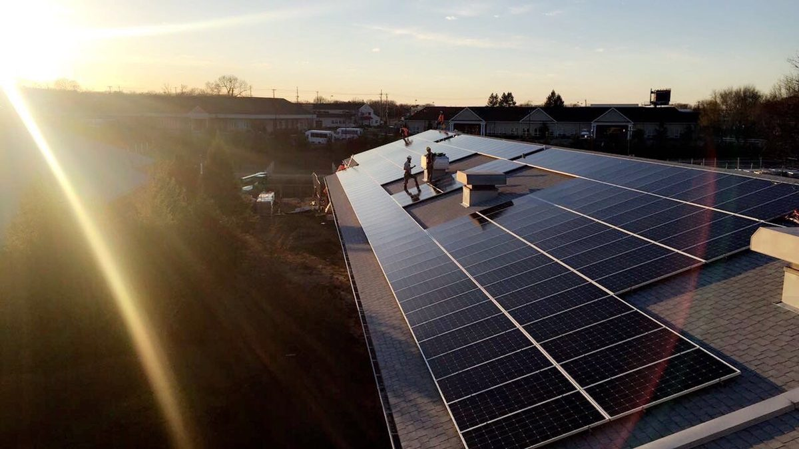

미국 뉴저지 물류창고 지붕 16곳에 10MW 넘는 커뮤니티 솔라…첫 1.6MW 착공, 용량 절반 이상은 중·저소득 가구 몫

창고 소유사 패로포인트, 페어론 창고부터 공사 시작해 연 1,270만kWh 생산 예상…주 정부는 3월 커뮤니티 솔라 3,000MW 추가 승인
미국 뉴저지주에서 물류창고 지붕을 활용한 커뮤니티 솔라 16곳, 모두 합쳐 10MW가 넘는 사업이 공사에 들어갔다. 산업용 부동산 회사 패로포인트(Faropoint)는 페어론(Fair Lawn)의 창고 지붕에 1.6MW 설비를 짓기 시작했고, 나머지 15곳 약 8.5MW도 주 정부 커뮤니티 솔라 프로그램에 선정돼 이 가운데 9곳은 바로 착공할 수 있는 상태다. 16곳이 모두 돌아가면 해마다 약 1,270만kWh를 만들어 이산화탄소 약 8,500톤을 줄일 것으로 회사와 자문사는 내다봤다. 커뮤니티 솔라는 자기 지붕에 패널을 달 수 없는 세입자 등이 다른 곳의 발전소에 가입해 전기요금을 깎는 방식으로, 회사는 사업마다 용량의 최소 절반을 중·저소득 가구에 배정하겠다고 했지만 주 규정상 최소 비율은 51%다. 브라이언 네이브 패로포인트 부사장은 "건물에서 쓰지 않던 부분을 활용해 우리가 투자한 지역사회를 도울 수 있다"고 말했다. 뉴저지 공공시설위원회(BPU)는 올해 3월 커뮤니티 솔라 용량 3,000MW를 추가 승인했으며, 약 45만 가구가 가입할 수 있는 규모다.
시민에너지 관점
뉴저지 커뮤니티 솔라는 올해 3월까지 3만7,000명이 넘는 가입자에게 순절감액 1,400만 달러를 돌려줬고, 이번 창고 지붕 사업은 새 땅을 깎지 않고도 그 혜택을 넓힐 수 있음을 보여 준다. 산단·물류창고 지붕 태양광은 건물주만 돈을 번다는 우려가 있지만, 용량의 절반 이상을 저소득 가구 몫으로 법에 박아 두면 지붕의 햇빛이 지역 세입자의 요금 절감으로 이어진다. 국내 산업단지와 물류센터 지붕도 같은 구조로 주민과 세입자가 가입하는 공동체 발전소로 열 수 있다. 정부와 지자체는 산단 지붕 태양광에 주민 가입 비율과 취약계층 배정 기준을 붙이는 제도부터 만들어야 한다.
출처: Electrek 2026-11-05 Michelle Lewis 원문 보기
米ニュージャージー州の物流倉庫16棟の屋根に10MW超のコミュニティソーラー…最初の1.6MWが着工、容量の半分以上は中・低所得世帯向け
倉庫所有会社ファロポイント、フェアローンの倉庫から工事を始め年1,270万kWhの発電を見込む…州は3月にコミュニティソーラー3,000MWを追加承認
米ニュージャージー州で、物流倉庫の屋根を使ったコミュニティソーラー16件、合計10MWを超える事業が工事に入った。産業用不動産会社のファロポイント（Faropoint）はフェアローン（Fair Lawn）の倉庫屋根で1.6MWの設備の建設を始め、残る15件・約8.5MWも州のコミュニティソーラー制度に選ばれ、うち9件はすぐに着工できる状態にある。16件がすべて稼働すれば年間約1,270万kWhを発電し、二酸化炭素を約8,500トン削減できると同社と助言会社は見込んでいる。コミュニティソーラーは、自宅の屋根にパネルを付けられない賃借人などが別の場所の発電所に加入して電気料金を下げる仕組みで、同社は各事業の容量の少なくとも半分を中・低所得世帯に割り当てるとしたが、州の規定では最低比率は51%だ。ファロポイントのブライアン・ネイブ副社長は「建物の使っていなかった部分を活用し、投資先の地域社会を支えることができる」と述べた。ニュージャージー州公益事業委員会（BPU）は今年3月、コミュニティソーラーの容量3,000MWを追加承認しており、約45万世帯が加入できる規模だ。
市民エネルギーの視点
ニュージャージーのコミュニティソーラーは今年3月までに3万7,000人を超える加入者に純節約額1,400万ドルを還元しており、今回の倉庫屋根事業は新たな土地を削らずにその恩恵を広げられることを示している。産業団地や物流倉庫の屋根の太陽光は建物所有者だけがもうかるとの懸念もあるが、容量の半分以上を低所得世帯の分として法律に定めておけば、屋根の日差しが地域の賃借人の料金節約につながる。韓国の産業団地や物流センターの屋根も、同じ仕組みで住民や賃借人が加入する共同体発電所として開くことができる。政府と自治体は、産業団地の屋根の太陽光に住民の加入比率と脆弱層への割り当て基準を付ける制度からつくるべきだ。
出典: Electrek 2026-11-05 ミシェル・ルイス（Michelle Lewis） 原文を読む
美国新泽西16座物流仓库屋顶建设逾10MW社区光伏…首个1.6MW项目开工，一半以上容量分配给中低收入家庭
仓库业主Faropoint从费尔劳恩仓库开始施工，预计年发电1,270万kWh…州政府3月追加批准3,000MW社区光伏
美国新泽西州利用物流仓库屋顶建设的16个社区光伏项目已开工，总容量超过10MW。工业地产公司Faropoint已在费尔劳恩（Fair Lawn）的仓库屋顶开始建设1.6MW设施，其余15个项目约8.5MW也已入选州社区光伏计划，其中9个已具备立即开工条件。公司及其顾问预计，16个项目全部运行后每年发电约1,270万kWh，减少二氧化碳约8,500吨。社区光伏是让无法在自家屋顶安装光伏板的租户等加入别处电站、以此降低电费的方式，公司表示每个项目至少一半容量将分配给中低收入家庭，但州规定的最低比例为51%。Faropoint副总裁布赖恩·内夫表示："利用建筑中原本闲置的部分，可以帮助我们所投资的社区。"新泽西州公用事业委员会（BPU）今年3月追加批准了3,000MW社区光伏容量，可供约45万户加入。
市民能源视角
截至今年3月，新泽西社区光伏已为超过3万7,000名用户带来1,400万美元的净节省，此次仓库屋顶项目表明，无需开发新土地也能扩大这一惠益。有人担心产业园区和物流仓库屋顶光伏只让业主获利，但若以法律规定一半以上容量归低收入家庭，屋顶上的阳光就能转化为当地租户的电费节省。韩国的产业园区和物流中心屋顶，也可以按同样结构开放为居民和租户加入的社区电站。政府和地方政府应首先建立制度，为产业园区屋顶光伏设定居民加入比例和弱势群体分配标准。
来源: Electrek 2026-11-05 米歇尔·刘易斯（Michelle Lewis） 查看原文
New Jersey puts more than 10 MW of community solar on 16 warehouse roofs; first 1.6 MW array under construction, at least half of capacity for low- and moderate-income households
Warehouse owner Faropoint starts in Fair Lawn and expects 12.7 million kWh a year; state approved another 3,000 MW of community solar in March
Construction has begun in New Jersey on 16 community solar projects on warehouse roofs, together totaling more than 10 MW. Industrial property company Faropoint has started building a 1.6 MW array on a warehouse roof in Fair Lawn, and the remaining 15 projects, about 8.5 MW, have also been accepted into the state's community solar program, with nine ready to begin construction. Once all 16 are running, the company and its adviser expect them to generate about 12.7 million kWh a year and cut carbon dioxide emissions by about 8,500 tonnes. Community solar lets renters and others who cannot put panels on their own roofs subscribe to an off-site array and lower their electricity bills; the company says at least half of each project's capacity will go to low- and moderate-income households, while the state's minimum is 51%. "Utilizing previously unused portions of our buildings allows us to support the communities where we invest," said Brian Nave, Faropoint's vice president of asset management and renewable energy. In March, the New Jersey Board of Public Utilities approved another 3,000 MW of community solar capacity, enough for about 450,000 subscribers.
Citizen Energy View
By March, New Jersey's community solar program had returned $14 million in net savings to more than 37,000 subscribers, and these warehouse projects show the benefit can grow without clearing new land. There is a worry that rooftop solar on industrial parks and warehouses only enriches building owners, but when the law reserves more than half of the capacity for low-income households, the sunlight on those roofs turns into lower bills for local renters. Rooftops on Korea's industrial complexes and logistics centers could likewise be opened as community power plants that residents and tenants can join. Governments, national and local, should start by attaching resident subscription ratios and allocation rules for vulnerable households to rooftop solar on industrial parks.
Source: Electrek 2026-11-05 Michelle Lewis Read the original